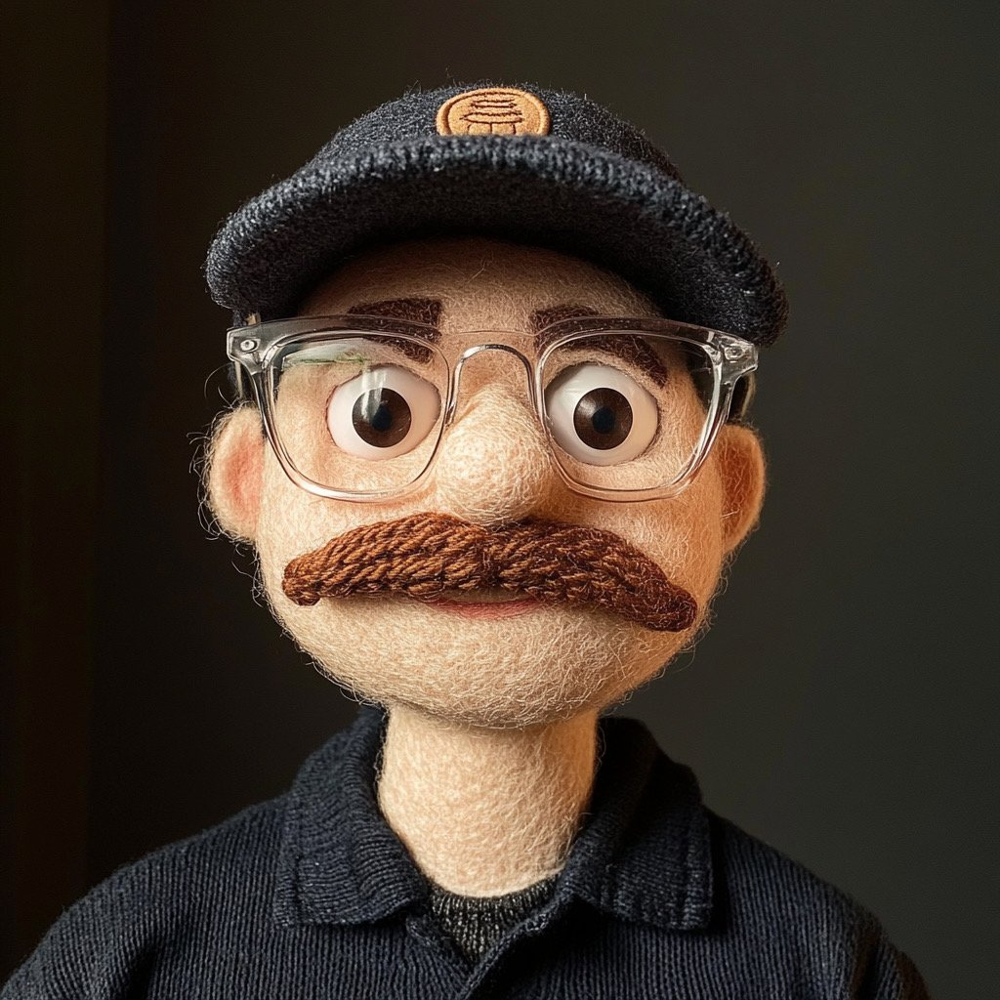
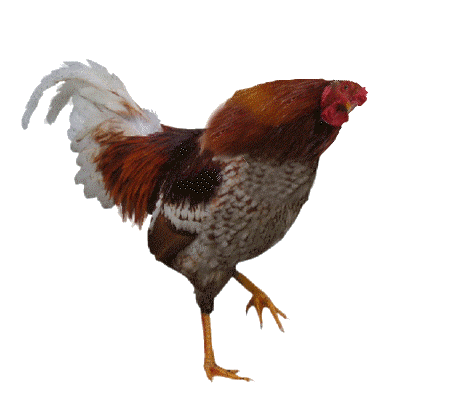

I’m a graphic and motion designer with a passion for bringing ideas to life through animation
and storytelling. As a student at WWU, I am constantly exploring new techniques in motion
design, branding, and visual storytelling, always seeking fresh and innovative ways to push
my creativity further. I thrive on collaboration and curiosity, embracing each challenge as
an opportunity to grow both professionally and personally.
Outside of design, I love to spend my time hiking and backpacking, exploring the vast beauty of Washington's outdoors.
These adventures fuel my creativity and inspire my work. I believe that design is not just
about making things look good, but about crafting visuals that leave a lasting impact. Every
project is an opportunity to tell a unique story, and I’m always eager to take on the next
creative challenge.